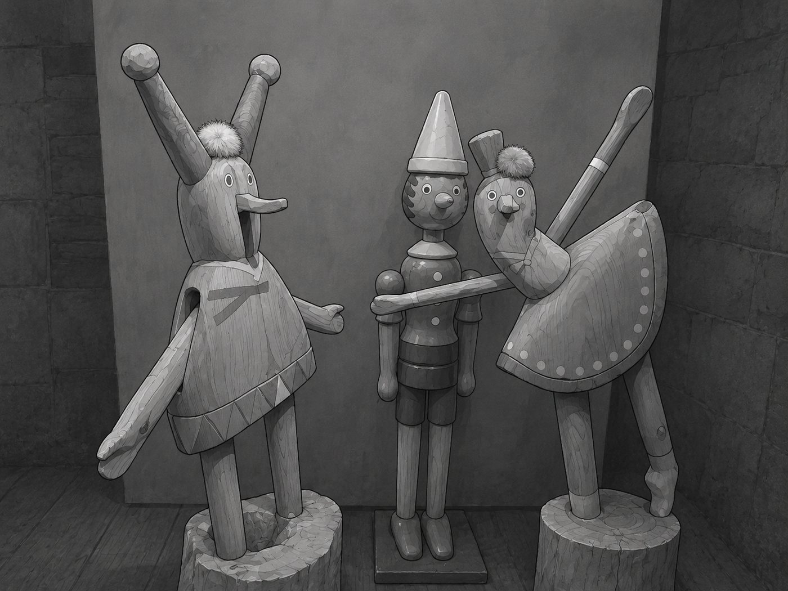
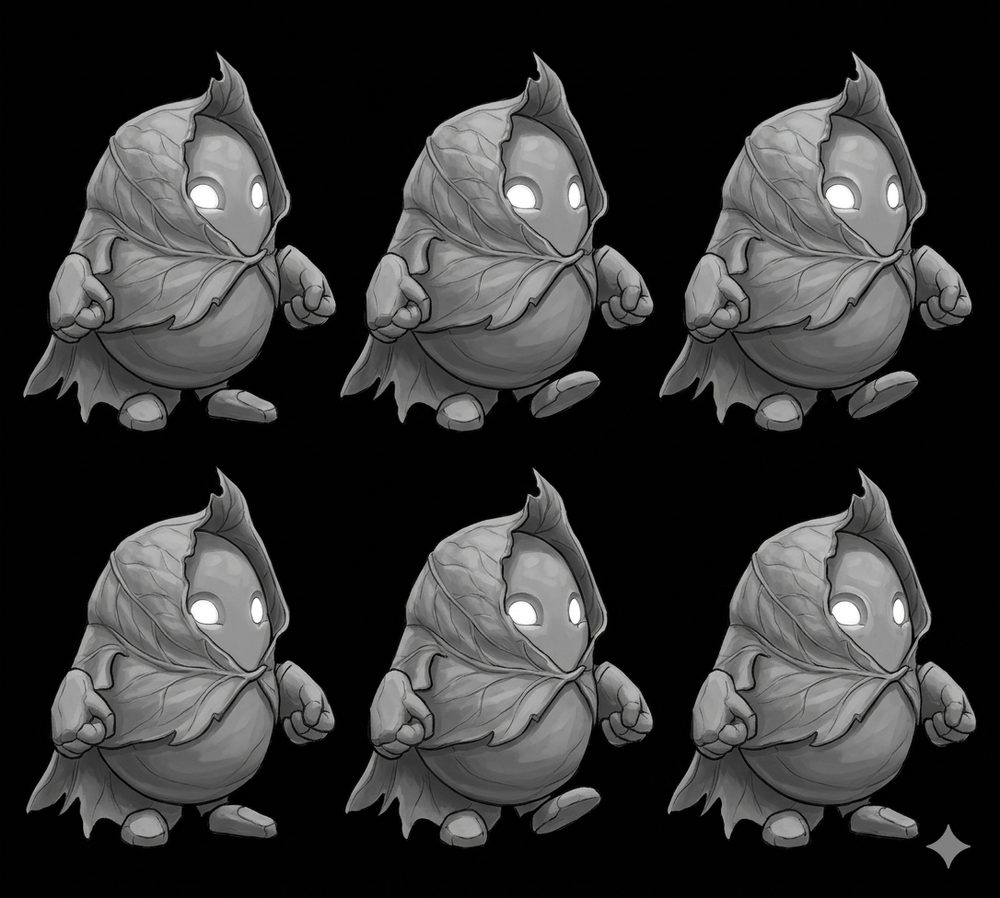

2D Metroidvania · Demo in development
돌과 시간
STONE & TIME
"아무도 부탁하지 않았다, 그래도 멈추지 않았다."
↓ 아래로 — 색이 있는 곳까지
"아무도 부탁하지 않았다, 그래도 멈추지 않았다."
↓ 아래로 — 색이 있는 곳까지
아주 오래전, 누군가 이 숲의 생명력을 가져갔습니다.
그들은 사라졌고, 숲은 흑백으로 남았습니다.
남은 것은 그들이 심심해서 깎았다는 목각인형들 —
태엽 걸음으로, 어디를 향하지도 않으며, 아직도 걷고 있습니다.

시간을 조종하는 힘이 아닙니다. 골렘의 사고가 가속되는 순간, 세상의 진짜 결이 보이기 시작합니다.
모든 것에는 강도가 있습니다. 약한 돌로 강한 것을 치면 부서지는 건 이쪽. 재질을 갈아 끼우며 상성을 파훼하세요.
당신이 무언가를 해낼 때마다 세계는 아주 조금씩 색을 되찾습니다. 완전한 색을 보는 날이 올까요?

큰 목표는 없습니다. 눈앞의 문 하나, 몬스터 하나, 재질 하나 —
그것들을 하나씩 해결하다 보면, 어느새 멀리 와 있을 뿐.
얽히고 되돌아오는 메트로배니아 — 지나온 길은, 나중에 다르게 보입니다.